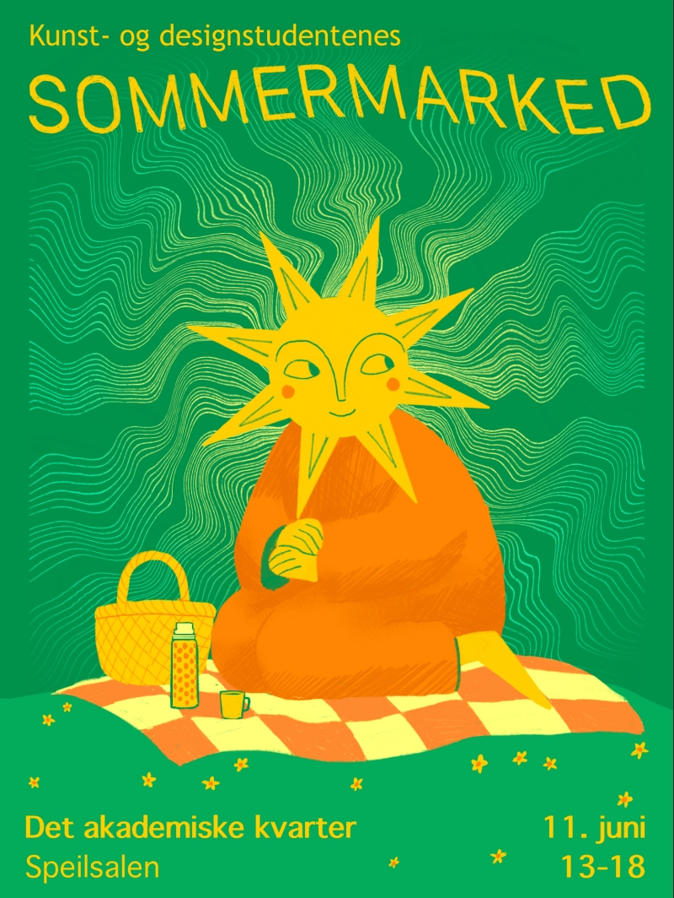
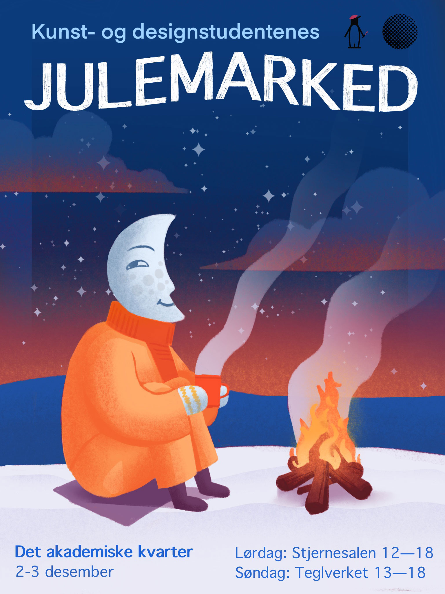
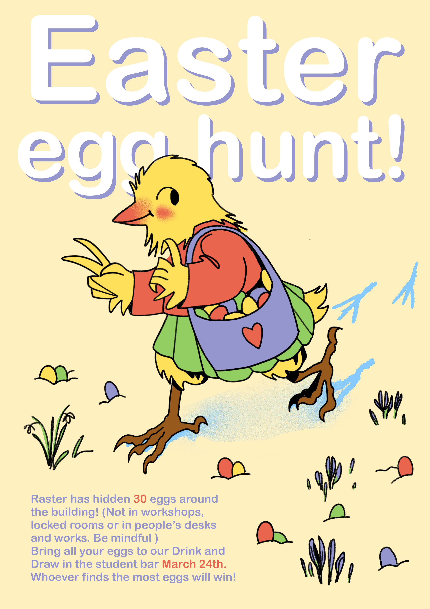
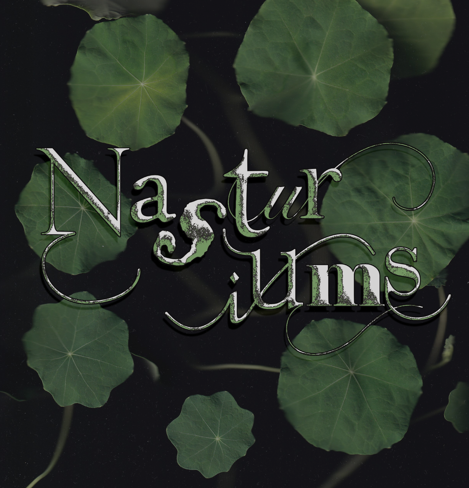
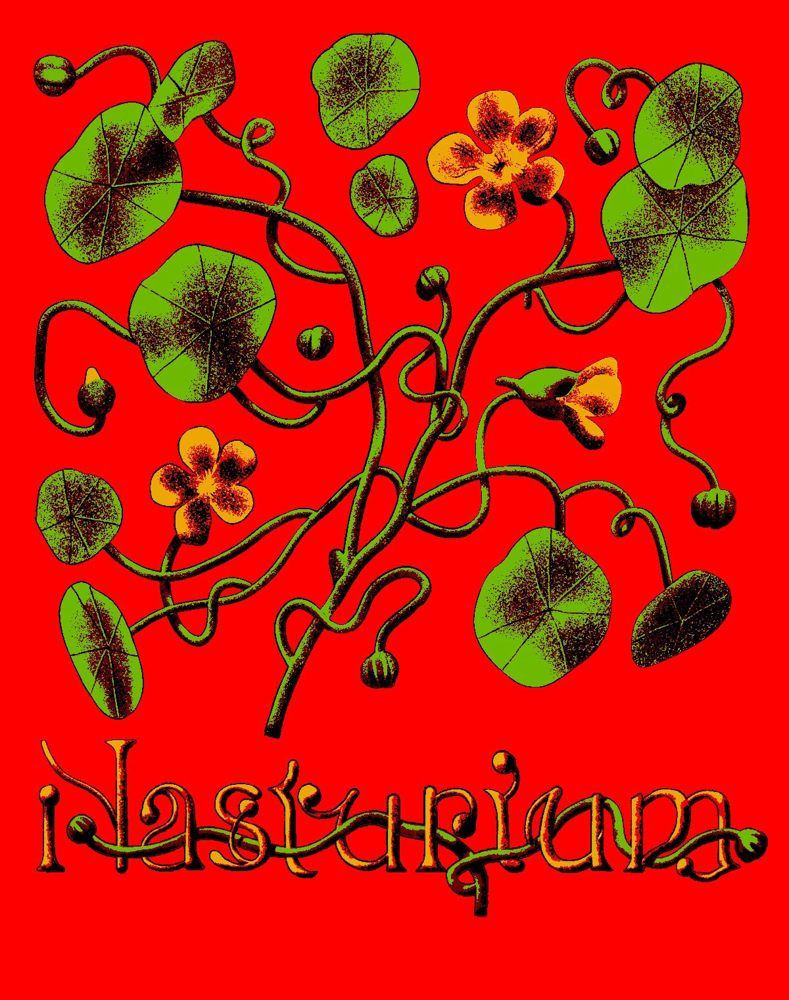

Plakater
Plakater jeg har laget for Linjeforeningen Raster, og egne utforskinger av typografi.
Når jeg har laget plakater for jule- og sommermarked har jeg tenkt mye på hva tonen er, hvem vi er, og hva vi selger. Et kunst marked er koselig! Vi er søte små studenter som sitter fint og selger ting vi har lagt masse arbeid inni, mest fordi det er kjekt å dele. Så jeg prøvde å lage passende koselige plakater :)
Når jeg har laget plakater for jule- og sommermarked har jeg tenkt mye på hva tonen er, hvem vi er, og hva vi selger. Et kunst marked er koselig! Vi er søte små studenter som sitter fint og selger ting vi har lagt masse arbeid inni, mest fordi det er kjekt å dele. Så jeg prøvde å lage passende koselige plakater :)




